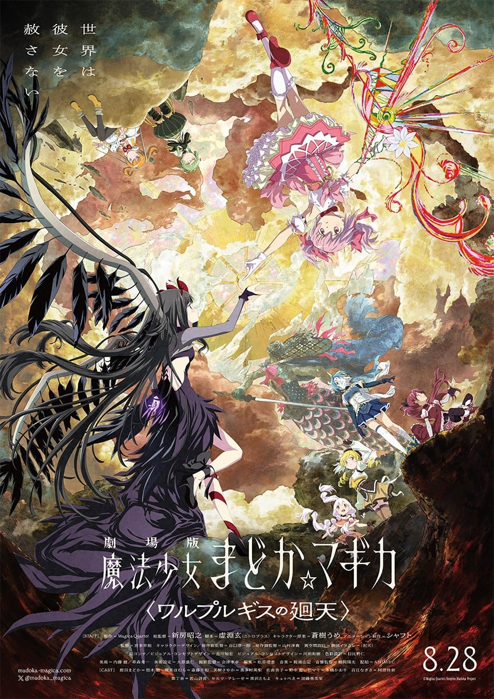

题材交叉
既在「高分治愈系动漫推荐」，也在「高分女性向动漫」。
「碧蓝航线：微速前行！第二季」（2026）是一部TV，由牧俊治执导，制作studio CANDYBOX，类型包括日常、百合、治愈，评分6.5，在本站出现在5份片单中，例如2026年夏季新番推荐、2026年新番总表、高分治愈系动漫推荐。页面只做片单对照，不提供播放。2017年9月、日本でのサービスを開始したスマートフォン向け艦船擬人化アプリゲーム『アズールレーン』。2019年冬にはTVアニメーションが放送され、その他にも様々な業界との異色コラボなどでゲーム内外で常に話題を呼びつつ、2024年９月にはサ。
按共享片单数排序，用来找和「碧蓝航线：微速前行！第二季」一起出现的高分动漫。
 5.5
5.5 4.5
4.5
7.7 5.0
5.0